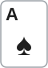
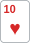
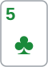

안녕하세요. 오늘도 대회 초반, 스택이 100BB로 깊은 레벨이에요.
탑페어 탑키커로 턴에 벳했는데 상대가 체크레이즈로 크게 올려요. 이 순간 가장 먼저 볼 숫자는 내 핸드의 세기가 아니라 콜한 뒤 남는 스택이에요. 오늘은 체크레이즈 한 번이 턴과 리버를 한 묶음의 결정으로 만드는 과정을 따라가요.
이 글에서 배울 것
- 체크레이즈를 받으면 먼저 콜한 뒤 SPR을 보고, 1 근처면 턴 콜이 리버 결정까지 묶인다는 것
- 턴만 본 기준과 리버까지 묶은 기준, 두 필요 에퀴티를 구하고 내 에퀴티가 그 사이에 있을 때 무엇이 콜을 정하는지
- 리버 카드 46장을 받는 카드와 버리는 카드로 실제로 나눠 세는 법
오늘의 한 판
Hero (HJ · 스택 100BB) · 상대 (SB · 스택 100BB) · 블라인드 0.5/1, BB 앤티 1BB

프리플랍
Hero(HJ) 2.2BB 오픈 → CO·BTN 폴드 → SB가 1.7BB를 더 내고 콜 → BB 폴드. BB가 낸 1BB와 앤티 1BB는 BB가 접어도 팟에 남아서, 팟은 2.2 + 2.2 + 1 + 1 = 6.4BB예요. Hero와 SB 모두 남은 스택은 97.8BB예요.
플랍 · 팟 6.4BB


SB 체크 → Hero 3.2BB c-bet(팟의 절반) → SB 콜. 팟 12.8BB
Hero는 탑페어, 키커 A예요. SB가 콜만 한 레인지에서는(AA·KK·AK는 프리플랍에 3벳했다고 가정) Hero보다 높은 한 페어가 없어요. 대신 하트가 두 장이라 플러시 드로우가, K·T가 붙어 있어서 Q·J를 든 스트레이트 드로우가 따라올 수 있는 보드예요.
턴 · 팟 12.8BB

6♠가 왔어요. SB 체크 → Hero 6.4BB 벳(팟의 절반) → SB 24BB로 체크레이즈 → Hero는?
6♠로 66은 셋이 됐고, 8♥7♥는 4나 9가 오면 스트레이트인 양방향 드로우가 됐어요.
리버 · 팟 60.8BB


Hero가 턴에 콜했어요. 리버 2♦, SB가 남은 70.6BB를 올인 → Hero는?
결론부터 말할게요. 오늘 가정한 SB라면 턴은 콜, 리버도 콜이에요. 다만 턴 콜은 "턴만" 보고 정하면 안 돼요. 콜하고 나면 남은 스택이 팟과 거의 같아져서, 리버에 어떤 카드가 오면 받고 어떤 카드면 버릴지 정해 둔 콜이어야 해요. 리버 2♦는 턴에서 받기로 정해 둔 카드였어요.
남은 베팅이 있어 실제 결과는 달라질 수 있어요. 판정은 에퀴티와 필요 에퀴티 비교로 하고, BB 금액은 계산용이에요.
오늘의 가정
- SB 프리플랍: 3벳 대신 콜만 하는 레인지예요. AA·KK·AK는 3벳했다고 봐서 빠져 있어요
- SB 턴 체크레이즈 레인지: 아래 표처럼 밸류와 드로우를 섞는다고 가정해요(솔버 결과 아님). KQ·KJ 같은 K 페어로는 체크레이즈하지 않고 콜만 한다고 봤어요
| 무리 | 핸드 | 콤보 | Hero 에퀴티(예) |
|---|---|---|---|
| 밸류 | TT·55·66(셋), KTs(투페어) | 11 | 셋 상대 0%, KTs 상대 약 6.8% |
| 드로우 | A♥Q♥·A♥J♥·A♥4♥·A♥3♥·Q♥J♥·Q♥9♥·J♥9♥·9♥8♥·8♥7♥(플러시 드로우), 하트가 아닌 QJs 세 콤보(양방향 스트레이트 드로우) | 12 | 8♥7♥ 상대 약 65.9%, Q♠J♠ 상대 약 84.1% |
- 드로우가 플랍을 콜한 이유: 표의 드로우는 모두 플랍에서 이미 드로우였어요. 하트 두 장은 플랍부터 플러시 드로우였고(A♥Q♥·Q♥9♥ 같은 몇 개는 거트샷까지), QJ는 플랍부터 A나 9가 오면 스트레이트인 양방향이었어요. 그래서 플랍 3.2BB 콜이 자연스러운 핸드들이에요
- 리버: SB는 체크레이즈한 핸드를 리버에 모두 올인한다고 가정해요(빗나간 드로우는 블러프로). 이 가정이 바뀌면 어떻게 되는지는 질문 절에서 봐요
1단계. 체크레이즈를 받으면 SPR부터
팟이 한 번에 커졌어요
이 판의 SPR(남은 스택 ÷ 팟, A10)이 어떻게 움직였는지 보면 오늘 판의 성격이 보여요.
- 플랍: 97.8BB ÷ 6.4BB, 약 15.3. 팟벳을 4번 해야 다 들어가는 깊은 팟이었어요
- 턴 벳 전: 94.6BB ÷ 12.8BB, 약 7.4. 아직 여유가 있었어요
- 체크레이즈를 콜한 뒤: Hero가 17.6BB를 더 내면 팟은 60.8BB, 남은 스택은 70.6BB예요. SPR이 약 1.2로 떨어져요
1.2가 무슨 뜻이냐면
리버에 SB가 팟보다 조금 큰 올인 한 번이면 끝나는 팟이라는 뜻이에요. 리버에 남는 결정은 사실상 "70.6BB 올인을 받나, 버리나" 하나뿐이에요.
A12에서 콜은 다음 카드를 보고 마지막 결정을 하는 권리를 사는 것이라고 했죠. 오늘은 그 마지막 결정이 아주 크고, 이미 모양이 정해져 있어요. 그래서 턴에서 '콜'을 누를 때 리버의 그 결정까지 미리 같이 고르는 거예요.
2단계. 기준이 두 개 생겨요
턴만 본 기준
Hero가 더 낼 돈은 24 − 6.4 = 17.6BB이고, 콜하면 팟은 60.8BB예요.
턴만 본 필요 에퀴티 = 17.6 ÷ 60.8 = 약 28.9%
이 숫자에는 숨은 전제가 있어요. 리버에 돈이 더 안 들어간다는 전제예요. 리버를 체크로 넘기고 쇼다운한다면 이 기준이 맞아요.
리버까지 묶은 기준
그런데 오늘은 리버에 70.6BB가 들어올 판이에요. Hero가 "턴에 콜하고, 리버엔 무슨 카드가 와도 받는다"고 정해 버리면 계산이 이렇게 바뀌어요.
- Hero가 앞으로 내는 돈: 17.6 + 70.6 = 88.2BB
- 끝났을 때 팟: 60.8 + 70.6 × 2 = 202BB
묶음 필요 에퀴티 = 88.2 ÷ 202 = 약 43.7%
같은 걸 다른 말로
88.2BB는 Hero가 턴에 건 6.4BB를 빼고 남은 스택 전부예요. 그러니까 리버 계획 없이 콜하면, 이름만 콜이지 턴에 스택을 다 거는 결정과 같아져요.
3단계. Hero 에퀴티는 두 기준 사이
두 무리로 나눠요
R02에서 한 방법 그대로, 체크레이즈 레인지를 밸류와 드로우 두 무리로 나눠요. 밸류 11콤보 상대로 Hero 에퀴티는 약 1.2%예요. 셋에는 리버 한 장으로 뒤집을 길이 없고, KTs에도 A가 와야만 이겨요. 반대로 드로우 12콤보에는 크게 앞서요. 전체로 보면 Hero 에퀴티는 약 40.1%예요.
턴만 본 기준 약 28.9% < Hero 약 40.1% < 묶음 기준 약 43.7%
이게 무슨 뜻이냐면
턴만 보면 넉넉히 콜이고, 묶어서 보면 모자라요. 그래서 이 콜이 맞는지는 Hero가 리버를 골라서 받을 수 있느냐에 달려 있어요. 리버 카드에 따라 SB의 드로우가 맞기도 하고 빗나가기도 하니까, 나쁜 카드에서 빠져나올 수 있으면 묶음 기준을 다 치르지 않아도 돼요.
4단계. 리버 카드 46장을 나눠 세기
R02와 무엇이 다르냐면
R02에서는 턴에 콜한 뒤 리버 카드를 세 무리로 나눠 두기만 했어요. 리버에 얼마가 걸릴지 아직 몰랐으니, 계획은 원칙으로 충분했죠. 오늘은 리버에 걸릴 돈이 70.6BB 올인으로 이미 정해져 있어요. 그래서 오늘은 46장을 한 장씩 세고, 그 표가 턴 콜을 할지 말지 자체를 정해요.
기준과 표
Hero가 모르는 카드는 46장이에요. 리버에 70.6BB 올인을 받을 때의 기준은 이래요.
리버 필요 에퀴티 = 70.6 ÷ 202 = 약 35.0%
이제 46장을 SB 레인지의 드로우에 한 장씩 대 봐요.
| 리버 카드 | 장 수 | SB 레인지에 생기는 일 | Hero 에퀴티(예) | 계획 |
|---|---|---|---|---|
| 하트 | 11 | 하트 드로우 9콤보가 플러시 | 2♥: 약 13.0% | 버림 |
| 하트 아닌 9 | 3 | QJ 네 콤보(9-T-J-Q-K)와 8♥7♥(6-7-8-9-T)가 스트레이트 | 9♠: 약 30.4% | 버림 |
| 하트 아닌 2·3·8·5·6·T·K | 18 | 완성되는 드로우 없음 | 2♦: 약 52.2% | 받음 |
| 하트 아닌 4·7 | 6 | 4는 8♥7♥, 7은 9♥8♥ 한 콤보만 스트레이트 | 4♠: 약 47.8% | 받음 |
| 하트 아닌 Q·J | 6 | Q는 A♥J♥·J♥9♥, J는 A♥Q♥·Q♥9♥가 스트레이트 | Q♠: 약 40.9% | 받음 |
| 하트 아닌 A | 2 | QJ 네 콤보가 스트레이트. 대신 Hero가 A·K 투페어로 KTs를 넘음 | A♦: 약 43.5% | 받음 |
읽는 법: 버리는 카드는 하트 11장과 9 세 장, 모두 14장이에요. 받는 카드는 나머지 32장이에요. 받는 카드 중 가장 나쁜 Q·J에서도 Hero는 약 40.9%라 기준 약 35.0%를 넘어요. 셋째 줄의 K·5·6·T는 보드에 이미 있는 숫자라 SB 밸류 콤보 일부를 지워 주는 카드여서, Hero 에퀴티가 2♦보다 조금 높은 약 54.5~60.0%예요.
계획이 콜을 살리는 이유
묶음 기준이 43.7%까지 올라간 건 나쁜 리버 14장에서도 70.6BB를 더 넣는다고 쳤기 때문이에요. 계획이 있으면 그 14장에서는 턴에 낸 17.6BB만 잃고 빠져나와요. 그럼 실제로 넘어야 할 선은 얼마일까요? 표로 직접 구해 봐요.
계획의 기준을 숫자로
계획대로 치르면 돈이 움직이는 길은 두 가지예요.
- 버리는 14장: 턴 콜 17.6BB만 잃어요. 14장을 합치면 14 × 17.6 = 246.4BB어치 손해예요
- 받는 32장: 88.2BB를 내고 202BB 팟을 놓고 쇼다운해요
버리는 카드에서 잃은 돈은 받는 카드에서 메워야 해요. 그 손해를 받는 32장에 고르게 나눠 얹으면 장마다 246.4 ÷ 32 = 7.7BB예요. 받는 카드 한 장에서 Hero가 감당하는 돈은 88.2 + 7.7 = 95.9BB가 되는 셈이에요.
계획 필요 에퀴티 = 95.9 ÷ 202 = 약 47.5% (받는 32장에서의 평균 에퀴티로 넘어야 할 선)
이제 받는 32장 하나하나에서 Hero 에퀴티를 구해 평균을 내요. 표의 예처럼 Q·J는 약 40.9%로 낮지만, 2·3·8은 약 52.2%, T♠·T♦는 약 60.0%까지 올라가요. 32장의 평균 에퀴티는 약 50.1%예요.
받는 32장 평균 에퀴티 약 50.1% > 계획 필요 에퀴티 약 47.5% → 턴 콜
이게 무슨 뜻이냐면
같은 Hero, 같은 SB 레인지인데 비교하는 선이 바뀌었어요. 리버를 다 받으면 Hero 에퀴티 약 40.1%로 묶음 기준 약 43.7%를 넘어야 해서 모자라요. 나쁜 14장을 버리면, 남은 32장에서 약 50.1%로 약 47.5%만 넘으면 돼요. 버리는 카드가 Hero 에퀴티가 낮은 카드만 골라 빼 주니까, 받는 쪽 평균이 기준보다 더 크게 올라가요. 같은 콜 버튼인데, 리버 카드표가 있느냐 없느냐가 판정을 가르는 거예요.
5단계. 리버 2♦: 계획대로 받는 콜
2♦는 하트도 아니고, 9·Q·J·A·4·7도 아니에요. 표에서 받기로 정한 카드예요. SB가 70.6BB를 올인했어요.
SB 레인지는 그대로 밸류 11콤보와 드로우 12콤보예요. 드로우가 전부 빗나가서 이제 Hero가 이기는 블러프가 됐어요. A04에서 본 것처럼, 리버 콜은 MDF 같은 기준선이 아니라 실제 벳 레인지의 밸류와 블러프를 세어서 정해요.
Hero 에퀴티 약 52.2% > 필요 에퀴티 약 35.0% → 콜
턴에서 이미 정해 둔 답이라, 리버에서는 표를 확인만 하면 돼요.
왜 그럴까: 체크레이즈가 '한 페어'의 질문을 바꿔요
한 페어끼리의 비교가 사라져요
A♠K♣는 SB 콜 레인지 안에서는 가장 높은 한 페어였어요. 그런데 오늘 가정한 체크레이즈 레인지에는 한 페어가 없어요. 남은 건 Hero가 거의 못 이기는 셋·투페어와, Hero가 크게 이기는 드로우뿐이에요. 그래서 질문이 "내 페어가 얼마나 높나"에서 "상대 레인지에 드로우가 얼마나 섞였나"로 바뀌어요. 이게 한 페어의 한계예요. 아무리 좋은 한 페어도 셋·투페어는 못 이기니까, 값은 상대 레인지가 정해요.
스택이 결정을 하나로 묶어요
SPR 15짜리 팟에서 턴 콜과 리버 콜은 따로 고민해도 되는 두 결정이에요. 리버에 무엇이 걸릴지가 아직 열려 있거든요. 체크레이즈로 SPR이 1 근처가 되면, 리버에 남은 건 올인 하나라 그 결정을 턴에서 같이 정해야 해요. 기준이 두 개 생기는 이유가 여기에 있어요.
자주 하는 실수
실수 1. "28.9%만 넘으면 콜, 리버는 그때 가서" 턴 기준만 보고 콜한 뒤, 리버에서 "여기까지 왔는데" 하며 다 받는 경우예요. 리버를 다 받으면 그건 묶음이고, 기준은 약 43.7%예요. 오늘 Hero 에퀴티 약 40.1%로는 모자라요. 대신 콜 버튼을 누르기 전에 받을 카드와 버릴 카드부터 정해요.
실수 2. "하트만 아니면 빈 카드" 플러시 드로우만 떠올리고 리버를 나누는 경우예요. 하트 아닌 9는 QJ 네 콤보와 8♥7♥를 스트레이트로 만들어서, Hero 에퀴티가 약 30.4%로 떨어져요. 대신 레인지의 드로우를 하나씩 리버 카드에 대 보고 세요. 낮은 카드도, 높은 카드도 예외가 아니에요.
실수 3. 고민이 싫어서 턴에 올인 A12에서 본 것처럼, Hero가 다 걸면 이번엔 상대가 고를 차례예요. 셋·투페어는 당연히 콜하고, 드로우는 접을 수도 있어요. 그러면 Hero가 크게 앞서던 상대가 빠지고 지는 상대만 남을 수 있어요. 대신 콜로 드로우를 붙잡아 두고, 리버 카드를 보고 정해요.
"SB가 리버에 빗나간 드로우를 포기하면요?"
좋은 질문이에요. 그러면 SB의 리버 올인에는 밸류와 완성된 드로우만 남아요. Hero는 올인을 받으면 거의 지니까, 올인에는 다 버리는 게 맞아요.
대신 SB가 드로우를 놓치면 체크하고, Hero도 체크해서 쇼다운으로 팟을 가져가요. 정리하면 SB는 사실상 Hero를 이기는 핸드만 올인하고 나머지는 체크하는 셈이에요. Hero는 리버에서 앞설 때만 팟을 가져가고, 뒤질 때는 올인에 접어서 리버에 돈을 한 푼도 더 넣지 않아요.
이건 턴만 본 기준의 전제, "리버에 돈이 더 안 들어간다"와 똑같아요. 그래서 이 경우 넘어야 할 선은 턴만 본 기준 그대로예요.
Hero가 리버에서 앞서는 몫 = 턴 에퀴티 약 40.1% > 턴만 본 기준 약 28.9% → 턴 콜
이번엔 Hero가 빗나간 드로우에게서 리버 올인을 받아 낼 길은 없어요. 대신 드로우가 완성된 리버에서 큰 올인을 맞을 일도, 밸류에 올인을 받아 줄 일도 줄어요. 오늘 가정에서는 이쪽이 Hero에게 오히려 편한 상대예요.
이게 무슨 뜻이냐면, 턴 콜을 무너뜨리는 건 상대의 블러프 여부보다 Hero가 리버를 가리지 않고 다 받는 것이에요. 상대가 블러프를 하는지는 리버에서 받을지 말지를 바꿀 뿐이에요.
선생님의 한마디
- 체크레이즈를 받으면 콜한 뒤 SPR부터 봐요. 1 근처면 리버 결정이 턴으로 당겨져 와요
- 턴만 본 기준(콜 ÷ 콜한 뒤 팟)과 묶음 기준(남은 스택까지 낸 돈 ÷ 끝났을 때 팟)을 둘 다 구하고, 내 에퀴티가 어디 있는지 봐요
- 그 사이라면 리버 카드를 상대 드로우에 한 장씩 대서 받을 카드·버릴 카드를 나누고, 그 표가 설 때만 콜해요
연습 문제
학습툴 에퀴티 계산기는 핸드 대 핸드로만 확인할 수 있어요. 레인지 에퀴티는 본문 값을 써요.
문제 1. 같은 판, 같은 턴 6♠예요. 그런데 Hero가 턴에 6.4BB가 아니라 9.6BB(팟의 4분의 3)를 걸었고, SB가 체크레이즈 대신 바로 94.6BB 올인을 했어요. 이 SB는 플러시 드로우로만 올인하고, 하트가 아닌 QJs 세 콤보는 콜로 리버를 본다고 가정해요. 나머지 올인 레인지는 본문 체크레이즈 레인지와 같아요. 콜할까요?
정답 보기
Hero가 더 낼 돈은 94.6 − 9.6 = 85BB, 끝났을 때 팟은 202BB예요. 필요 에퀴티는 85 ÷ 202, 약 42.1%예요. 리버에 남은 결정이 없어서 나쁜 리버에서 빠져나올 길도 없어요. 올인 레인지는 밸류 11콤보에 하트 드로우 9콤보, 모두 20콤보예요. Hero가 크게 앞서던 QJ가 빠져서 Hero 에퀴티는 약 33.5%로 내려가요. 약 33.5% < 약 42.1% → 폴드. 본문 턴과 결론이 뒤집혔어요. 리버에서 고를 권리가 사라진 데다, Hero의 에퀴티를 받쳐 주던 드로우까지 레인지에서 빠졌기 때문이에요.
문제 2. 본문과 똑같이 Hero가 6.4BB를 걸고 SB가 24BB로 체크레이즈했어요. 레인지도 같아요. 그런데 이 SB는 앞선 판들에서 칩을 잃어 스택이 50BB였어요. 턴에 콜할까요? 리버 계획은 본문과 같을까요?
정답 보기
SB에게 남은 스택은 50 − 2.2 − 3.2 − 24 = 20.6BB예요. 턴만 본 기준은 그대로 약 28.9%예요. 묶음으로 보면 Hero가 낼 돈은 17.6 + 20.6 = 38.2BB, 끝났을 때 팟은 102BB라 38.2 ÷ 102, 약 37.5%예요. Hero 에퀴티 약 40.1%가 묶음 기준까지 넘어요 → 콜. 리버를 다 받는다고 쳐도 기준을 넘는 콜이에요. 그래도 계획이 쓸모없지는 않아요. 리버 기준은 20.6 ÷ 102, 약 20.2%인데, 하트 리버에서 Hero는 약 13.0%라 그 카드에서는 버리는 게 여전히 나아요. 스택이 얕아질수록 리버 계획에 기대는 몫이 줄어드는 거예요.
핵심 정리
- 체크레이즈를 받은 탑페어는 셋·투페어를 못 이기는 한 페어라, 그 값은 상대 레인지에 드로우가 얼마나 섞였나가 정해요
- SPR이 1 근처면 턴 콜과 리버 결정은 한 묶음이에요. 리버까지 다 받는 콜은 턴에 올인을 받는 콜과 같은 계산이에요
- 내 에퀴티가 턴만 본 기준과 묶음 기준 사이에 있으면, 콜을 정하는 건 리버에서 빠져나올 카드가 얼마나 되나예요
- 빈 카드는 "무늬만 아니면"이 아니라 상대 드로우마다 대 보고 세요
정리하며
오늘은 대회 초반 HJ에서 A♠K♣로 탑페어를 맞히고, 턴에 SB의 체크레이즈를 받은 판을 따라갔어요. 체크레이즈 한 번에 SPR이 약 15.3에서 약 1.2로 떨어지면서 턴 콜과 리버 올인이 한 묶음이 됐어요. Hero 에퀴티는 턴만 본 기준은 넘고 묶음 기준에는 못 미쳤고, 그래서 리버 46장을 받을 32장과 버릴 14장으로 나눴고, 받는 32장의 평균 에퀴티가 계획 기준을 넘는 것을 확인하고 콜했어요. 리버 2♦는 받기로 한 카드였고, 그대로 콜했어요.
다음 글 R06에서는 대회 초반 BTN 오픈에 SB가 3벳하고, BTN이 인 포지션으로 3벳 팟을 치르는 판을 따라가요. 오늘은 싱글 레이즈 팟이 턴 체크레이즈로 갑자기 커졌다면, 다음은 프리플랍부터 커진 팟을 포지션을 가진 쪽에서 봐요.
AI 작성 · 숫자는 계산 검증 · 가정 레인지 기준(솔버 결과 아님) · 토너 BB 앤티 1BB · 남은 베팅이 있어 BB 금액은 계산용